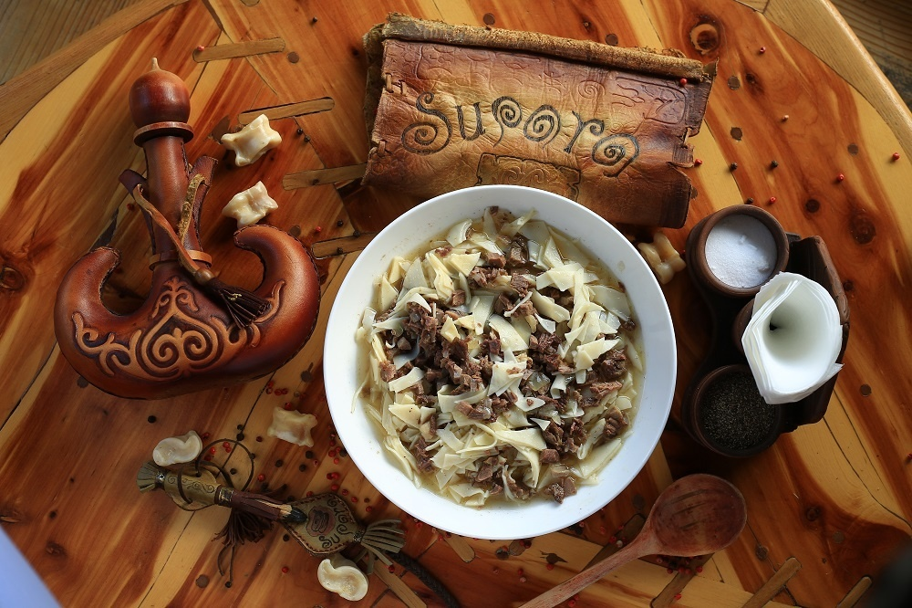

Beshbarmak is the national food of kyrgyz and nomad nations.
The term beshbarmak means "five fingers" because nomads traditionally eat this dish with their hands. Another name for beshbarmak in Kyrgyz is 'tuuralgan et', which means crumbled/chopped meat. Beshbarmak is usually made from finely chopped boiled meat, mixed with dough (typically egg noodles) and chyk, an onion sauce. It is typically served on large communal platters, shared between several people, after shorpo, which is a first course of mutton broth served in bowls called kese. It is also followed by a broth called ak-serke(shorpo mixed with kymyz or ayran), which is thought to help with settling the stomach. Festive beshbarmak can be cooked together with kazy and chuchuk.
